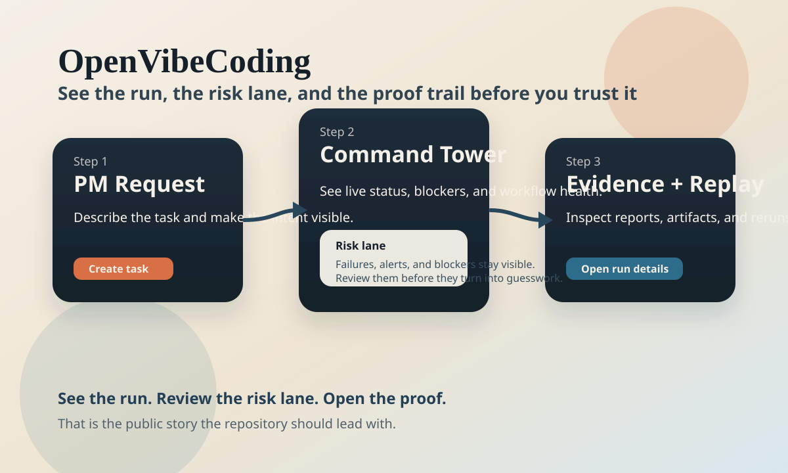

I want the fastest proof-first run
Start with the public first-run cases if you want to see a governed workflow, a case record, and replayable proof before you read package internals.
CortexPilot is for teams that need more than “the agent replied.” Route Codex- and Claude Code-style governed work through one command tower, keep every workflow case reviewable, and attach MCP-readable proof plus replay to the same operating record. The same front door also speaks to AI ops and platform teams that need a shared operator view instead of scattered agent logs.
Current boundary: the public surface is still a repo/demo control plane, not a hosted operator product, and the shipped MCP surface remains read-only.
Need a narrower entrypoint? Use the decision cards below for compatibility, integrations, skills, read-only MCP, API, and builder quickstarts. Need the repo map? Read the docs map or runtime topology.

The public story should be simple: send one request, watch it move through Command Tower, confirm the Workflow Case, then inspect Proof & Replay.
New here? Use this as the quick decision layer. It helps you pick the right entrypoint without reading the whole repo map first.
Start with the public first-run cases if you want to see a governed workflow, a case record, and replayable proof before you read package internals.
Start with the read-only MCP quickstart if you want the shortest truthful map of what external tools can inspect today.
Start with the API and builder quickstarts if you want OpenAPI, contract-facing types, thin client helpers, and the shared frontend substrate.
Start with the AI + MCP + API map if you need the operator brief, protocol boundary, and builder surfaces in one truthful control-plane overview.
Start with the ecosystem map if you want to see why Codex, Claude Code, and read-only MCP stay in the front door while adjacent tools stay in comparison-only layers.
Start here if your main question is “I use Codex, Claude Code, OpenClaw, skills, or builders. Which CortexPilot surface should I open first?”
Start with the integration guide if you need the truthful answer to how Codex, Claude Code, and OpenClaw can use CortexPilot today without fake official-plugin claims.
Start with the skills guide if you want repo-owned playbooks for coding-agent teams instead of guessing from the `.agents/skills/` tree.
Watch governed agents, MCP tools, queue state, and live operator signals from one surface.
Keep the request, queue, verdict, linked runs, and operating context attached to one case record.
Inspect failures, compare reruns, and keep the execution chain auditable before you trust the outcome.
Prompt 4 now adds two ecosystem-facing layers on top of this spine: a read-only MCP server for structured control-plane reads, and an AI operator brief that explains current run state without creating a second truth source.
Current boundary: MCP is read-only only, and CortexPilot is not a hosted operator product today. Write-capable MCP remains gated, and `cortexpilot.ai` should not be treated as a live hosted front door.
Use the MCP quickstart when you want the smallest truthful map for read-only MCP inspection across runs, Workflow Cases, compare, and proof.
Use the API quickstart when you want the shortest path into OpenAPI, the thin frontend API client, and contract-facing types.
This file is the tracked source for the live GitHub Pages landing surface. The main calls to action intentionally point to stable public Pages and GitHub URLs so the repo, releases, and docs map stay verifiable. The host-compatible quickstart stays:
npm run bootstrap:hostCORTEXPILOT_HOST_COMPAT=1 bash scripts/test_quick.sh --no-relatednpm run dashboard:dev
Official first public path: start with news_digest if you want the smallest release-proven
proof loop, then use topic_brief and page_brief as public showcase expansions.
Best for the fastest proof-oriented first run with one topic, a few domains, and a short time window.
Proof state: official public baseline.
Best for a bounded topic brief when you want search-backed evidence without broadening scope.
Proof state: public showcase, not yet equally release-proven.
Best for a single URL with browser-backed evidence and a read-only workflow case wrapper.
Proof state: public showcase, browser-backed path.
External agents and tools can now inspect runs, workflows, queue state, approvals, and proof without mutation.
The operator surface can now explain run failures, compare deltas, queue risk, and the next action without pretending to execute recovery.
Workflow Cases are moving from detail pages to reusable review assets with recap, proof, and replay highlights.
Use CortexPilot when a Codex-driven workflow needs one command tower, one case record, and one replayable proof path.
The same operator surface works for Claude Code-style coding loops that need governed visibility, approvals, and evidence before promotion.
MCP is a real protocol surface here, but the current boundary is intentionally read-only. External tools can inspect truth; they cannot mutate it.
OpenHands belongs in the broader ecosystem layer, while OpenCode stays comparison-only. OpenClaw is a different product category and stays out of the main front door.
Read the current ecosystem and builder map in the ecosystem page.
Need the sharper truthful adoption story for coding-agent teams? Pair it with the integration guide and the skills quickstart.
PM intake can already generate a bounded pre-run brief before execution starts, so approval and evidence expectations are visible early.
Workflow Cases already expose a workflow-scoped brief that explains queue posture, latest run context, and the next operator action.
Run Detail and compare surfaces already explain deltas, proof, incident context, and the next action without pretending to execute recovery.
Open the combined product surface at AI + MCP + API surfaces if you want the truthful map for operator copilot, read-only MCP, and builder entrypoints in one page.
Flight Plan, workflow, run detail, and compare surfaces already reuse the same bounded operator brief instead of inventing a second truth source.
The current MCP surface is real and useful for structured control-plane reads, but it stays read-only and does not mutate runs, approvals, or queue state.
The frontend API client and contract package already provide a documented integration edge for dashboard, desktop, and future web consumers.
This is the truthful “works today” layer for AI operator guidance, MCP inspection, and frontend API integration. It is not a hosted service and not a full SDK platform.
A thin client layer for dashboard, desktop, and web consumers that need runs, Workflow Cases, command-tower overviews, and PM intake routes.
Use the generated contract package when you want the current API-facing type boundary without importing backend modules directly.
Brand copy, locale helpers, status presentation, and frontend-only shared types already live in one place instead of staying trapped inside the dashboard or desktop shells.
Want the human-readable onboarding path? Start at the builder quickstart.
The release-proven first public baseline when you want the smallest proof-first run.
A bounded topic brief for search-backed evidence without widening scope.
A browser-backed brief over one URL with a read-only Workflow Case wrapper.
See the public distribution loop in the use-case and share-ready asset guide.